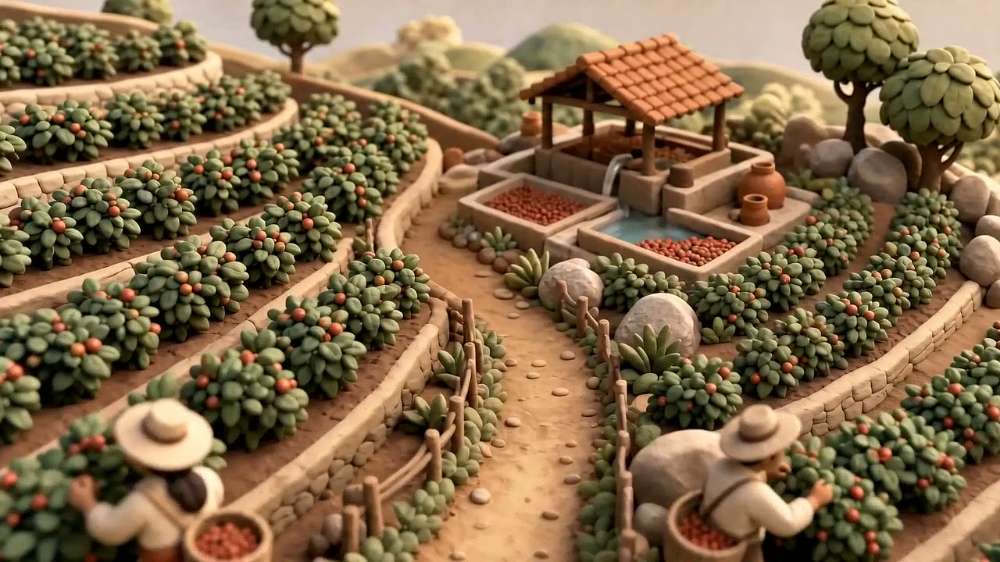
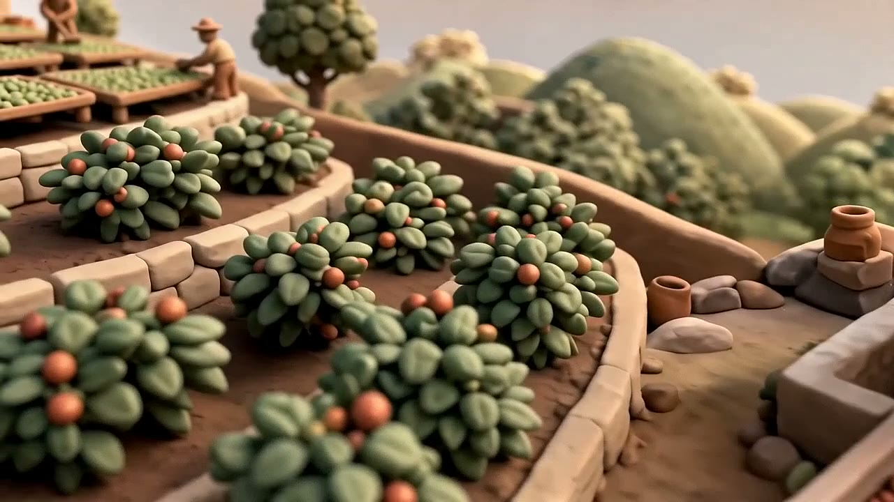
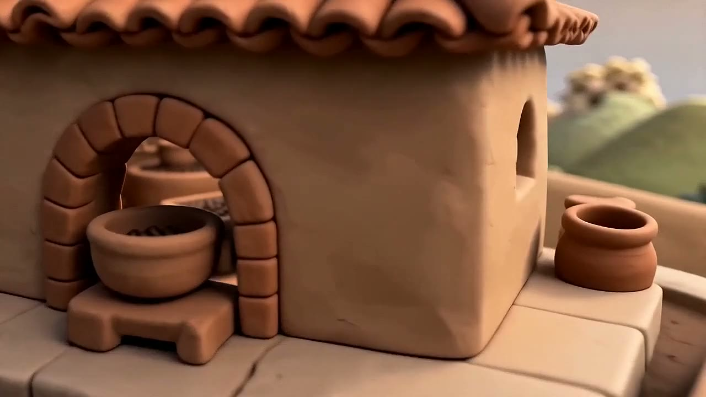
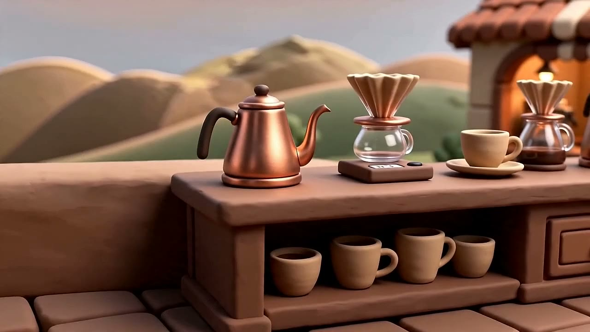
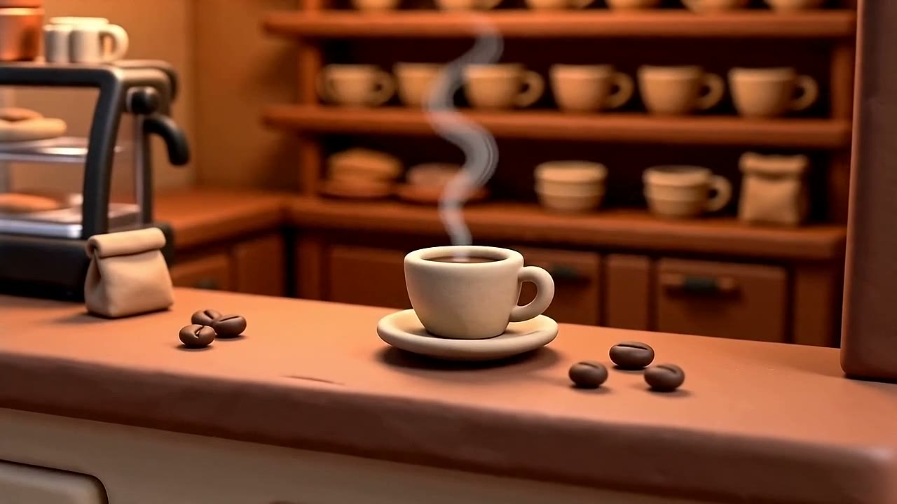

01
The Estate
山坡莊園 · From cherry to cup
飛入焦點：the pickers on the terraces（無屋頂可掀 → 低空掠過梯田）
scroll-world · 影片刷放範例
五個共用同一段美術指令的黏土場景，從咖啡果一路飛到成品咖啡。這頁記錄它怎麼被做出來——路由、修正、提示詞配方、寫法與用法。
定位
這不是隨手做的 demo，而是 scroll-world 技能的目標範本：新生成的世界要達到的標竿。它經過完整流程才收斂——
/guide（skills/skill-router）路由至此。「fly through the world／把一門生意變成可捲動電影」的 brief，會在 router 的「建置型態」步驟落到 scroll-world，而不是 three-scroll-hero-creator——因為訪客驅動的是時間，不是場景本身。要做新世界時把它當參考：先對齊這種一致性與刷放手感，再抽換品牌／文案／場景主體。
五個場景
縮圖為每個場景的靜態圖（../assets/*.jpg，git 內帶，同時當引擎 fallback poster）。刷放影片 *.mp4 被 gitignore。

山坡莊園 · From cherry to cup
飛入焦點：the pickers on the terraces（無屋頂可掀 → 低空掠過梯田）

水洗處理廠 · Wash & dry
飛入焦點：the raised drying beds

烘焙室 · Fire & time
飛入焦點：the glowing drum roaster

手沖吧台 · Water & care
飛入焦點：the gooseneck pour landing in the dripper

咖啡館 · 結尾 + CTA
飛入焦點：the giant cup（結尾 → 世界溶接到巨杯前）
提示詞配方
先做靜態圖（gpt_image_2，3:2、2k），再做刷放影片（seedance_2_0，16:9、1080p、8 秒、無音軌），影片的 --start-image 就是那張靜態圖。全部重生成用 skills/scroll-world/references/pipeline.md。
最關鍵的訣竅——這段一字不差重用，就是讓五個各自生成的場景讀起來像「同一個地方」的原因。只換方括號裡的品牌部分，場景之間絕不改寫。
Isometric low-poly 3D diorama floating as a small rounded island on a plain solid #F4ECE2 cream background with a soft contact shadow beneath it. Soft matte clay 3D render, rounded toy-model shapes, gentle warm studio lighting, soft long shadows, tilt-shift miniature look. Cohesive color palette of cream #F4ECE2, espresso #2B1D14, olive #6F7D5A, gold #C79A4A, burnt-orange #C2551F, caramel #B5794E. Highly detailed, centered composition, absolutely no text, no letters, no numbers, no logos.
#F4ECE2 同時是 index.html 的 --sw-bg：頁面底色＝場景底色＝海報無縫接合。
| id | 接在前綴之後的 Subject: 句 |
|---|---|
estate | a hillside coffee estate — stepped green terraces of coffee shrubs heavy with ripe red cherries, two pickers with shoulder baskets, a small wooden drying hut, catching low morning sun. |
mill | a wet-mill washing station — concrete water channels carrying coffee cherries, raised mesh beds of drying beans, a worker raking them level, jute sacks stacked to one side. |
roastery | a small-batch roastery — a rounded drum roaster glowing warm, a roaster tending the drum, a cooling tray of dark beans, hessian sacks and a stack of tins, thin steam curling up. |
bar | a pour-over coffee bar — a barista pouring from a gooseneck kettle over a dripper sitting on a scale, fresh grounds, a row of brewers along a wooden counter, warm pendant light. |
shop | 拿掉浮島框架。one giant clay cup of coffee floating centred on the cream background, gentle rising steam, a few small orbiting props — a single bean, a saucer, a coffee leaf. |
--start-image = 該場景靜態圖）每段都是一鏡到底、往前推進、8 秒、無剪接——正是這種連續性讓引擎能刷成平滑飛行。[FOCAL] 依下表填入。
Single continuous cinematic camera move, no cuts. Begin high and far, looking down at the
whole scene like a tiny model. The camera slowly glides forward and descends toward it,
sweeping in toward [FOCAL], as if flying inside. As the camera pushes in, the roof and upper
structure gently lift and open away to reveal the warm interior. Soft matte clay diorama,
tilt-shift miniature, warm light, cream #F4ECE2 / espresso #2B1D14 / caramel #B5794E palette.
Smooth, graceful, slow motion, subtle parallax. No text, no captions.
| id | [FOCAL] | 備註 |
|---|---|---|
estate | the pickers on the terraces | 無屋頂 → roof 子句換成 the camera flies low across the terraces toward the pickers. |
mill | the raised drying beds | — |
roastery | the glowing drum roaster | — |
bar | the gooseneck pour landing in the dripper | — |
shop | the giant cup | 結尾 → roof 子句換成 the world dissolves toward the single giant cup, arriving in front of it. |
影片參數：--mode std --resolution 1080p --aspect_ratio 16:9 --duration 8（無音軌）。手機版 *-m.mp4 同提示詞、重編碼更小（~720p、-g 4）以利手機 seek。
寫法
Subject: 一句。用具體道具點名（梯田、乾燥床、鼓式烘豆機、鵝頸壺、咖啡杯）——道具錨定故事階段。--start-image=該場景靜態圖，不給 --end-image（架構 A）。刷放把 currentTime 從 0 推到尾，中途倒退或剪接刷起來會很糟。object-fit:cover；直式手機裁到中央約一半。焦點置中留頭部空間，重要物件別放最左右緣。absolutely no text/letters/logos。生成器很愛幻覺出招牌文字。用法
index.html 把每個場景對到一段影片與一塊文案；其餘交給 scrub-engine.js：影片以 Blob 載入（永遠可 seek），捲動偏移映射到影片 currentTime——是刷放，不是自動播放。
index.html 設）--sw-accentcd examples/scroll-world-coffee python3 -m http.server 8000 # 開 http://localhost:8000 → 捲動即飛入
手機：coarse-pointer／≤860px 時載入 clipMobile、合併 seek、首幀前用靜態圖當 poster、拿掉飄浮粒子；無 -m 版則 fallback 桌機 clip。